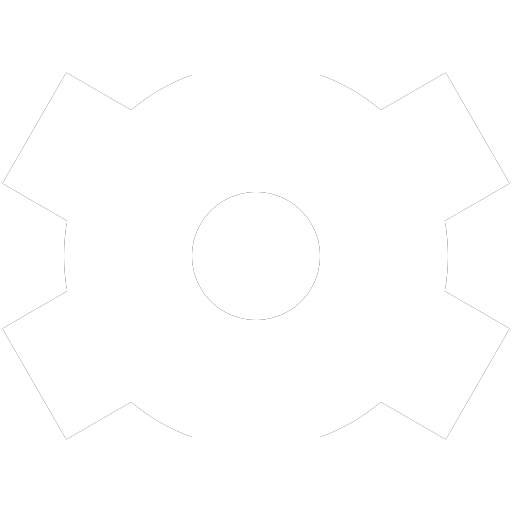

Precision
Prompt Lab
프롬프트 설계부터 음성 자막 추출까지,
AI 크리에이티브 워크플로우를 하나의 파이프라인으로.
Nano Banana
Google's standard generation model
FLUX.2 Pro
Speed-optimized detail generation
Z-Image
Instant lifelike portraits
GPT Image 1.5
True-color precision rendering
Grok
Powerful Al image generation by xAl
Nano Banana
Google's standard generation model
FLUX.2 Pro
Speed-optimized detail generation
Z-Image
Instant lifelike portraits
GPT Image 1.5
True-color precision rendering
Grok
Real-time intelligence and reasoning
Workflow Pipeline
All Systems Operational
PROMPT ENGINE
아이디어 입력

파라미터 설계
AI 프롬프트 생성
최적화 결과
Content Planning
기획
제작 가이드
편집 및 자막
업로드
Prompt Architecture Lab
Server Status: Online
01 간단한 프롬프트
MY PRESETS:
02 엔지니어링 파라미터
Front View (정면)
04 엔지니어링 레이어 (공정)
L1
문맥 및 상황 정렬
대기 중
L2
스타일 일관성 유지
대기 중
L3
의미적 세부 확장
대기 중
프롬프트 (최적화)
대기 중...
AI Image Studio (Nano Banana 2)
n8n Node Active
IMAGE GENERATION PROMPT
GENERATED RESULT
결과 이미지가 여기에 표시됩니다
AI Video Studio KLING 3.0
VIDEO GENERATION SETTINGS
FRAME
SEQUENCE (START & END)
Start Frame
드래그
앤 드롭 또는 클릭
시작 이미지 (필수)
시작 이미지 (필수)
GENERATED VIDEO
생성된 영상이 여기에 표시됩니다
(약 5분 소요)
Video Production Studio
Server Status: Online
AUDIO & TIMELINE SETTINGS
TIMELINE DATA (SCRIPTS / TIME CODES)
대기 중... (핵심 의도를 입력한 후 생성 버튼을 누르세요)
📋 STORYBOARD GENERATOR
STORYBOARD OUTPUT
대기 중... (대본이나 주제를 입력한 후 생성 버튼을 누르세요)
🎥 SHOT LIST GENERATOR
SHOT LIST OUTPUT
대기 중... (시나리오를 입력한 후 생성 버튼을 누르세요)
🏷️ VIDEO SEO OPTIMIZER
SEO PACKAGE OUTPUT
대기 중... (영상 주제를 입력한 후 생성 버튼을 누르세요)
🎵 BGM & SFX ADVISOR
BGM & SFX RECOMMENDATIONS
대기 중... (영상 내용을 입력한 후 추천 버튼을 누르세요)
🎨 VIDEO CONCEPT BRIEF
CONCEPT BRIEF OUTPUT
대기 중... (영상 아이디어를 입력한 후 생성 버튼을 누르세요)
System Infrastructure
Global Network Operational
API LATENCY
--ms
Stable
SERVER UPTIME
00:00:00
Booting...
AI ENGINE STATUS
CONNECTING...
Active Node